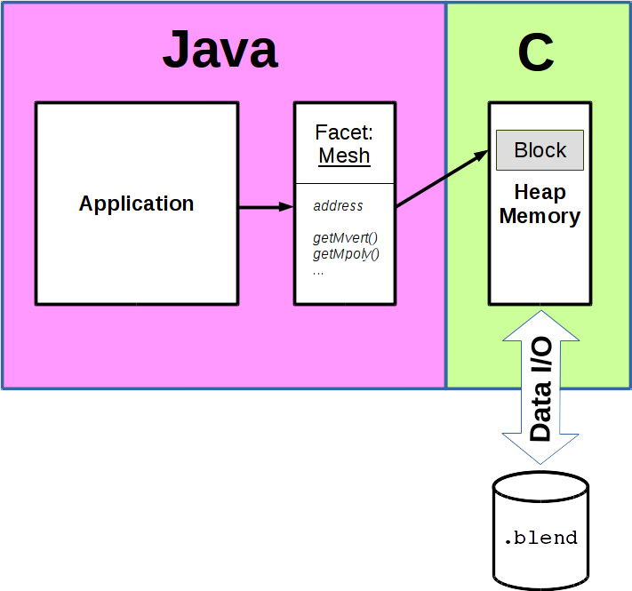

Java Blend
A Generic Blender File Import/Export Toolset for Java
-- first tech. demo --
-- not intended for public audience --
27th of Nov. 2015
Holger Machens
Introduction
Blender is written in the programming language C and blender files
are dumps of native memory content (C-structs and scalar types)
to disk. The file is organised in blocks of arbitrary length and
the type of data in it, is described in one single special block, which
contains type information (meta data) for all native and
structured types which can exist in a .blend file.
Based on the very detailed type information, it is possible to
automatically generate code for any target language to interpret
the data in any blender file of the same version. The only challenge
thereby is to find a suitable mapping from C to whatever target
language was chosen.

This project is an attempt to find a suitable type mapping and
develop a toolkit for generic any-version blender file import/export
in Java. The toolkit consists of two tools:
- Model Generator: Based on the type information of any
reference blender file, the model generator generates a data model in
terms of facets which provide type-safe access to raw blender data.
The generated data model is suitable to access data
of any blender file of the same version (although the blender file
format is said to be pretty stable across versions).
- Data I/O: The I/O tool is then simply necessary to load a
blender file in memory and point the facets of the formerly
generated data model to their respective content in memory. Respectively,
it takes the data from memory and writes it to disk, if that is required.

To be more precise, the data of the blender file is not actually
converted to Java, as long as the program does not access one of
the facets methods. Data stays in its format in memory (native)
and the facets are responsible to find the correct memory location
and convert the data on demand.
This approach has of course advantages and disadvantages.
- Stable Concept: The biggest advantage is for me, that changes to the model
generator will be extremely rare. Even if changes in blender file
format occur, such as elements get added/removed or types or names
of any struct members change, it will not affect the model
generator, since all changes will be reflected in the metadata,
too - the model generator will just do its job based on the rules
it already knows and thereby generate a new model compatible
to the new format. Also, when mapping C to Java, pointers are a significant issue,
because of its ambiguity: They can be references to objects, scalar types, arrays
or other pointers. Of course it is possible to convert data to either type suitable, but
it is not possible to just determine the use case of a pointer based
on the given type information without semantic background. Thus, you can of course design a
data model which maps those pointer types to certain case specific
Java types, but that's not generic and requires to study all the
types possible in a blender file and identify the use case of each
pointer in it (not to mention cases like null terminated stings,
void pointers, arbitrary type casts and such things). And every format change coming in the future needs
to be considered, which means a constant maintenance effort.
But the developer can always easily determine what the correct use
of a pointer is, the data model just needs to provide him suitable
methods to do such things. That's what this concept is about:
Keep things simple but provide maximum flexibility.
- Import and Export: Another advantage is, that it allows even
exports to blender file format without almost no additional effort.
This is not as natural as you would expect, mainly because pointers
and memory addresses are a very common thing in blender files. When you
convert data from one domain to the other you loose all
this information and have to maintain/create fake or real memory addresses
and link things together in terms of pointers before exporting. And then type casts
and multiple levels of indirection kick in and things
get even more complex and error prone. Instead using the facet
approach the export is as easy as the import, since data never left
the format it had. New instances just get assigned to a certain
memory region and the address of that region is provided to the facet.
Pointers referring to the new object can receive its address and data
can be dumped to disk without further effort.
- Runtime Performance: A disadvantage of this concept is loss in
application response time. Each access to data costs extra effort to adjust
a pointer to the associated data block and convert it to the requested type
in Java (byte ordering included). In case of pointers and arrays, it requires
additional effort to first determine the type of data required before actually
doing something. Compared to a concept which converts the data once when loading,
you loose a few extra instructions to address translation and conversion, but it
generally depends on the amount of data in the file you actually access in your
application. And at last, those extra operations are mainly performed on stack,
which means low additional cache contention, which in turn means, that the
actual performance loss (in response time) is expected to be low.
Current state of the project is, that the concept is ready and a first tech.
demo is available which demonstrates the whole data read part. It consists of
Please note, that the demo is currently not leveraging the full potential
of the tool chain and the data provided by blender, simply because I haven't
done it yet - but it's all there.
Roadmap
- Testing import feature (currently in progress)
- Library support (files external to blender files)
- CustomData: Not sure what it exactly is, but I have the objects .
- Export: allocate memory(block), assign to facet, link to libraries, output to file
- Compression (5 min. work, thanks to new concept)
- Testing, optimisation, polishing ...